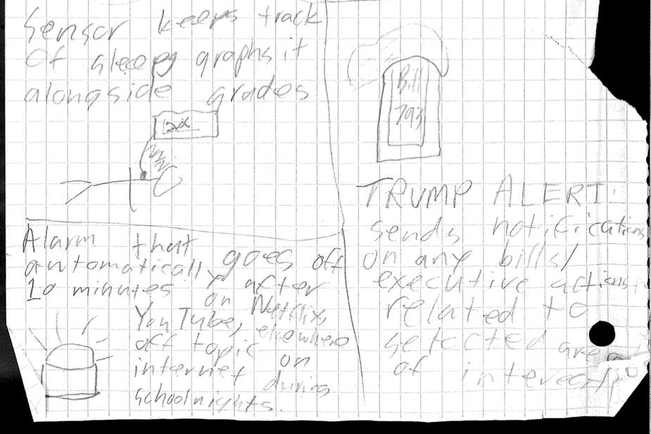
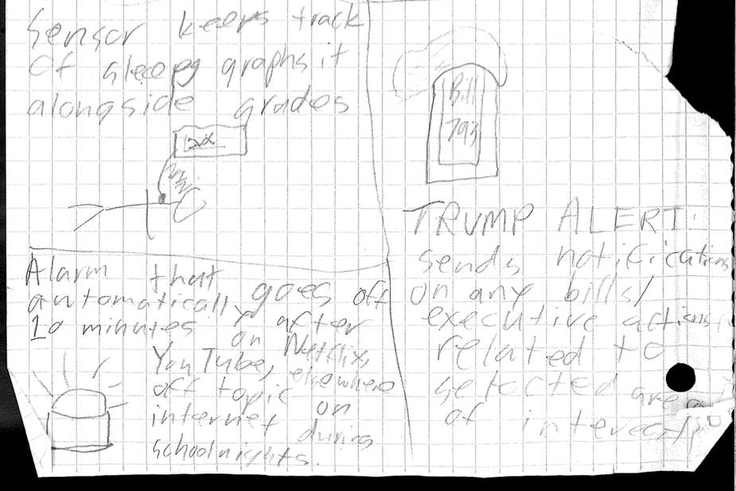

My data vizualization on Giants batters' statcast data
1. Compost, Recycling, and Garbage - sense weight of bins in Caf. Look at when/how much is put in each bin
2. No idea how to do this w/sensors, but number of people in different areas during lunch - quantifying social divides?
3. Water Bottle Fillers - How often do people fill their water bottles at different locations? When?
4. Use sensor in library, see if they have data daily from across a school year - during what times of the year do people use the library most often? Does it correlate to when there’s the most school work?
5. Caf lunch lines - how long does the entree line get when there are different entrees?
1. Sensors at different entrances to Balboa Park, sensing people - how often do people use each entrance? When?
2. Sensor at San Carlos Caltrain, sensing trains - How often does Caltrain run late? How late does it run? Are there patterns to its lateness?
3. CO2 levels at different parks around San Carlos - How do Carbon Dioxide levels differ from neighborhood to neighborhood? Does it relate to population density? Proximity to highways?
4. Heart rate monitor - How much do Lick students’ heart rates differ when reading political news? How does that compare to other types of news? Reading for homework?
5. Sound sensor - measure how frequently I click or type on my computer throughout the day.
http://flowingdata.com/2016/12/08/marital-status-by-age/ This vizualization is quite simple and effective. It does exactly what it needs to do to communicate data, and chooses a good scope of data to examine - it doesn't try to tackle a topic that is too big/complex, or too small to really make for an interesting vizualization. The colors are clear and distinct, and it's easy to tell what you're looking at. You can also break it down and just look at one category (married women, for example), which is nice.
Right now, I have the input and the output of my project ready. I've set up the power tail/relay, and tested out the Jawbone Up. Still to come, I need to figure out how to connect those two: what IFTTT to use, how to set up the google sheet, and how to make the Photon react to the google sheet. I've really enjoyed learning about IFTTT - it's a really cool and powerful tool, and I've already set up a bunch of applets for politics with my email account. One challenge I've run into is that the sleep data sends as one log, which means it all downloads at once around 8:30 AM - not the ideal time for turning off the TV.
Note: now using Jawbone, not Fitbit.
-How do you build a relay into a power strip? How do you make a Photon trigger a relay?
-Mr. Kleindolph says the wiring is really easy, and he can show it to me.
-How do you make a Photon monitor and react to changes in a Google Sheet?
-Look at code of IFTTT program.

1. Jawbone notices wearer is asleep.
2. Using an IFTTT program, the Jawbone records sleep data on a Google Sheet.
3. When new data indicates that the wearer is sleeping, Photon starts its program
4. This program triggers a relay, shutting off the power strip.
5. Without power, the TV turns off.

 
